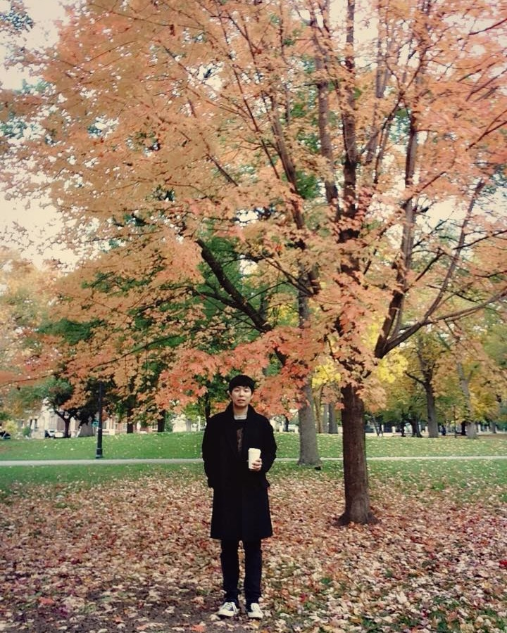

Hello there, welcome to my website
I am an individual with a passion for many technical fields, from implementing efficient algorithmic solutions to delivering accessible solutions. I like to tackle challenges by using data to discuss with others. I sit at the junction between Software Engineering, Machine Learning application, and Human-Computer Interaction (UI/UX).
As a software engineer, my technical expertise spans many areas of Computer Science, including algorithm and system design, full-stack web development, data engineering, data analytics, machine learning applications, and game development.
As a researcher, I can design and conduct interdisciplinary research in the field of Human-Computer Interaction, Accessibility, and Human Factors (digital ergonomics). I can perform mixed data analytics (both quantitative and qualitative) and share the findings with academic or public audiences using visualizations and presentations.
You can find my other online profiles from:
A good looking profile picture, 2015.
I was born in Bielefeld, Western Germany (yes, it exists.). I then moved to Seoul, South Korea, where I was a proud member of Boy Scout. I was also a school tennis player, learned how to swim, played piano for a decade, violin for about 6 years, learned how to play Go, got a certificate in computer use and of course lots of video gaming. I then happened to come to Toronto, Canada, where my second fold of life happened.
I used to be a competitive Dota player (2nd place in regional 2011), and used to enjoy playing Counter Strike, League of Legends, etc. I also have an old classic Sega, N64 console, and a nintendo switch (Sonic and Pokemon fan).
I like pizza, hamburger (Rudy's is the best), poutine,
Samgyeopsal (삼겹살).
As of editing this page, I'm currently reading a book 'Ametora' by Mark W. David. Before that, I finished reading 'Modulor' by Le Corbusier. Monocle April 2022 issue.
I also like things with good kan-ji (感じ) for example:
- Bauhaus-design 'art things'
- Daily stuff like chairs, cups, clothes, sneakers, wrist watches, heavy-duty gears
- all kinds of music, but my favorites are french-touch, bossa-nova, jazz, hiphop, etc.
Personally, I think human living is all about finding the meaning of true self. This includes the process of taste building. With that said, I am a person with a specific taste, and it may not be convincing to others. Yet, I find it fascinating because it represents how unique I can be, and be distinguished from others.

Me and my daughter in Toronto, Fall, 2021, Canada

Myself in Toronto, Fall, 2019, Canada

Myself in Toronto, Fall, 2016, Canada

Myself in Toronto, Fall, 2015, Canada
Myself in Toronto, Fall, 2014, Canada

Me at the Art Gallery of Ontario, Canada
Curriculum Vitae (Lazy updated)
Full CV can be found here
Education
| Doctor of Philosophy (Ph.D.) | Industrial Engineering: Human Factors | University of Toronto | 2016 - 2021 |
| Master of Science (M.Sc.) | Computer Science: Human-Computer Interaction | Toronto Metropolitan University | 2013 - 2016 |
| Honours Bachelor of Science (H.B.Sc.) | Computer Science and Mathematics double major and Ethnomusicology minor | Trinity College, University of Toronto | 2007 - 2013 |
Selected academic publications
| Spitschan, M., Mead, J., Roos, C., Lowis, C., Griffiths, B., Mucur, P., Herf, M., Nam, S., & Veitch, J. A. (2022). luox: novel validated open-access and open-source web platform for calculating and sharing physiologically relevant quantities for light and lighting. Wellcome Open Res, 6, 69. doi:10.12688/wellcomeopenres.16595.3 (2022) |
| Nam, S., Fels, D., and Chignell, M., "Toward a Subjective Assessment System for Closed Captioning Quality", SMPTE Motion Imaging Journal, 130(3), 35-44. (2021) |
| S. Nam and Fels, D. "Towards Designing a Subjective Assessment System for The Quality of Closed Captioning Using Artificial Intelligence", NAB Show - Broadcast Engineering and IT Conference. (2020) |
| S. Nam, Fels, D., and Chignell, M., "Modeling Closed Captioning Subjective Quality Assessment by Deaf and Hard of Hearing Viewers." in IEEE Transactions on Computational Social Systems, SMC (SCIE). (2020) |
| Nam, S. and Fels, D. “Simulation of Subjective Closed Captioning Quality Assessment Using Prediction Models.” International Journal of Semantic Computing (ESCI), 13(01), 45-65. (2019) |
| Nam, S. and Fels, D. “Assessing closed captioning quality using a multilayer perceptron.” IEEE AIKE 2018, Laguna Hills, California, USA (2018) |
| Nam, S. and Fels, D. “Design and Evaluation of an Authoring Tool and Notation System for Vibrotactile Composition.” HCII 2016, Toronto, Canada (2016) |